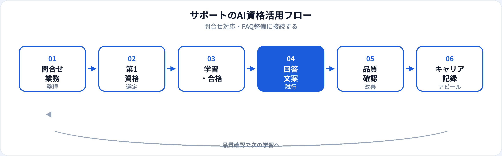

コールセンター・チャットサポート・メール/チケット対応・技術サポート（L1）など、カスタマーサポートは「問い合わせを受け、解決またはエスカレーションする」業務が中心です。生成AIは、回答文案のたたき台、FAQ・ナレッジ記事、エスカレーション要約の作成を効率化できます。一方、誤った手順案内や顧客情報の入力ミスは、クレームと信頼低下につながります。本記事では、サポート職が取るべきAI資格を比較し、業務別の活用からキャリアまで2026年6月時点で整理します。カスタマーサクセス（CS）向けは別記事、営業職向けも併せて参照してください。
サポートとCS（カスタマーサクセス）の違い
| 観点 | カスタマーサポート | カスタマーサクセス（CS） |
|---|---|---|
| 主な動き | 受動（問合せ対応） | 能動（定着・拡張） |
| 成果指標 | 初回解決率、SLA、満足度 | 更新率、NRR、活用度 |
| AI活用例 | 回答文案、FAQ、エスカレーション要約 | オンボーディング資料、QBRたたき台 |
| 詳細記事 | 本記事 | CS向け記事 |
サポート職にAI資格が効く理由
サポートの評価は「速く・正確に・丁寧に」です。資格学習は、生成AIを回答の下書きとして使いつつ、最終回答と顧客情報管理を人間が担う——という型を、チーム内で共有するための共通言語になります。
初回回答のスピード
定型問合せの文案・手順説明の骨子を速く作り、複雑案件の調査に時間を割ける。
ナレッジの整備
FAQ・トラブルシューティング記事の下書きを量産し、チーム全体の初回解決率を上げる。
顧客情報の守り方
何をAIに渡してよいかを説明できる。生成AIパスポートの個人情報・情報管理章が実務と直結する。
試験対策はこちら
サポートの種類と資格の効き方
| サポートの種類 | AI資格の主な役割 | 第1候補の目安 |
|---|---|---|
| 電話・チャット一次対応 | 挨拶・案内文案、エスカレーションメモ | 生成AIパスポート |
| メール・チケット対応 | 回答文案、ステータス更新文、内部引継ぎ要約 | 生成AIパスポート |
| 技術サポート（L1） | 手順書下書き、既知不具合の説明文案 | 生成AIパスポート → G検定（任意） |
| ナレッジ・FAQ管理 | 記事構成、検索キーワード案、重複整理 | 生成AIパスポート |
| BPO・多言語サポート | トーン統一、翻訳たたき台（要人間確認） | 生成AIパスポート ＋ 社内ルール |
業務別：生成AIの活用シーン
| 業務 | 生成AIの使い方（例） | 資格で学ぶ関連知識 |
|---|---|---|
| 定型問合せ | 料金・手続き・営業時間などの回答文案 | 公式FAQ・マニュアルと突合 |
| 障害・不具合対応 | 確認手順リスト、顧客向け説明文の骨子 | ハルシネーション、エスカレーション判断 |
| エスカレーション | 二次担当向け要約（症状・試したこと・顧客期待） | 個人情報のマスキング |
| FAQ・ナレッジ作成 | 問合せログからFAQ候補、記事構成案 | 正確性の最終確認は人間 |
| クレーム対応 | 共感文・謝罪文のたたき台、次アクション文案 | トーン・法務確認は人間 |
| 社内引継ぎ | チケット履歴の要約、引継ぎチェックリスト | ログ・契約情報の取り扱い |
おすすめ資格の比較
| 資格 | サポート職との相性 | 学習時間目安 | 向いている担当 |
|---|---|---|---|
| 生成AIパスポート | ◎ 回答文案・FAQ・情報管理に直結 | 20〜40時間 | 一次対応、チケット、ナレッジ管理全般 |
| ITパスポート | ○ SaaS・ネットワーク用語の整理 | 40〜80時間 | IT製品のサポート、BPO |
| G検定 | △ AI製品・チャットボット理解 | 80〜150時間 | AI SaaSのサポート、社内Bot運用 |
第1候補と学習順
-
第1：生成AIパスポート
回答文案・FAQ・エスカレーション要約のたたき台にすぐ効く。合格後、週次で多い問合せ1種類から試す。
-
第2（任意）：ITパスポート
IT製品サポートで、ネットワーク・クラウド・セキュリティ用語の整理が必要な場合。
-
第3（任意）：G検定
AI機能付きSaaSのサポート、社内チャットBotの運用支援を目指す場合。
サポート職の活用フロー

サポートでは受付→調査→回答→記録→ナレッジ化の流れが基本です。AIは文案と整理を速くし、正確性・顧客情報保護・最終回答は人間が担います。
合格後の実践（回答・FAQ・ナレッジ）
回答テンプレート集
「受付・確認中・解決・お詫び」の4型プロンプト。製品名・日時・個人情報は毎回人が差し替え。
FAQ量産サイクル
週次でTop5問合せを選び→FAQ下書き→担当者が検証→ナレッジベース公開。
エスカレーション要約
「症状・再現手順・試した対処・顧客要望」の4項目テンプレ。PIIはマスキングしてからAIに渡す。
サポート現場の注意点
| やってよいこと | 避けるべきこと |
|---|---|
| 公開マニュアルに基づく手順文案 | 顧客の氏名・連絡先・契約内容の入力 |
| 匿名化した症状説明からの確認手順案 | 未確認の手順をそのまま顧客に案内 |
| FAQ・ナレッジの構成案 | チケット全文を個人AIに貼付 |
| 社内引継ぎメモの要約（PII除去後） | AI回答を検証なしでSLA内に送信 |
キャリア・転職でのアピール
現職（サポートのまま）
「生成AIパスポート（年月）」と、初回解決率向上「FAQ整備○件」「平均処理時間短縮」などをセットで記載。
転職・キャリアチェンジ
- カスタマーサクセス（CS） 顧客理解 ＋ 生成AIパスポート ＋ ナレッジ整備実績（CS記事）
- プリセールス・営業（インサイド） 説明力 ＋ 生成AIパスポート ＋ 顧客対応実績（営業記事）
- サポートエンジニア（L2/L3） 障害調査 ＋ IT/G検定 ＋ 技術学習
- プロンプトエンジニア（業務寄り） 社内Bot・FAQ設計 ＋ 生成AIパスポート（詳細）
資格の一般的な活かし方はAI資格はキャリアにどう役立つ？を参照。
資格だけでは足りない点
サポートの評価は共感・正確性・スピードです。資格はAIリテラシーの証明になりますが、製品知識・調査力・クレーム対応は現場経験で培う領域です。合格後は、定型問合せから小さく試し、必ずマニュアルと突合してください。
よくある質問
カスタマーサポートにおすすめのAI資格はどれ？
問合せ対応・FAQが主なら生成AIパスポート。IT製品ならITパスポート、AI SaaSならG検定も検討。
顧客の問い合わせ内容をAIに入力してよい？
社内規定を確認。個人特定情報は入力せず、匿名化した説明や公開情報ベースの文案に限定。
サポートとCSの違いは？
サポートは問合せ対応中心、CSは定着・更新中心。資格の第一候補はどちらも生成AIパスポートです。
サポートからCSや営業にキャリアチェンジできる？
可能です。顧客理解と説明力は強み。資格に加え対応実績があると説得力が増します。